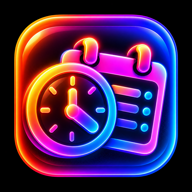

Gestion du temps · Où va ta semaine, et combien d'heures d'ici la fin de la session ?
Toutes tes activités, de la plus grande à la plus petite : le total d'heures d'ici la fin, et ce que ça représente en journées complètes de 24 h.
« Prévu » vient de l'activité « Instrument principal » dans Ma semaine. « Réel » est la moyenne des semaines où tu as coché au moins une case.
Copie un résumé de tes heures, de ta pratique et de tes objectifs, avec une consigne. Colle-le ensuite dans ChatGPT, Claude ou Gemini.
Installe l'outil sur ton écran d'accueil : il s'ouvre comme une app, fonctionne sans Internet et protège mieux tes données.
Enregistre un fichier pour passer du téléphone à l'ordinateur. « Tout remettre à zéro » vide toutes les sections : semaine, pratique et objectifs.